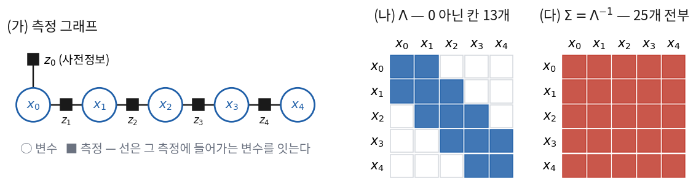
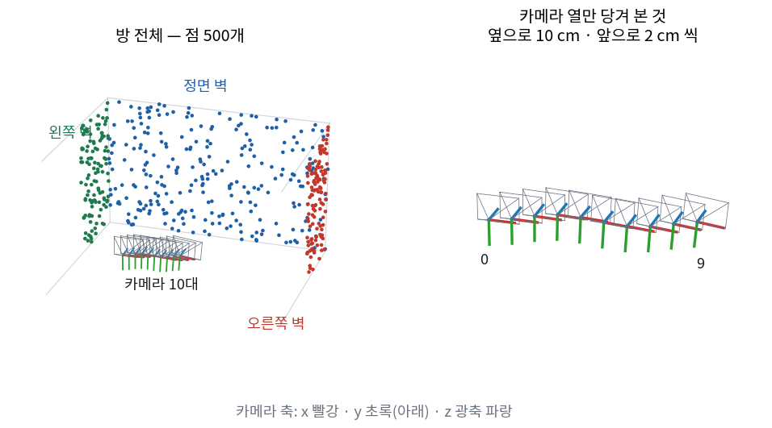
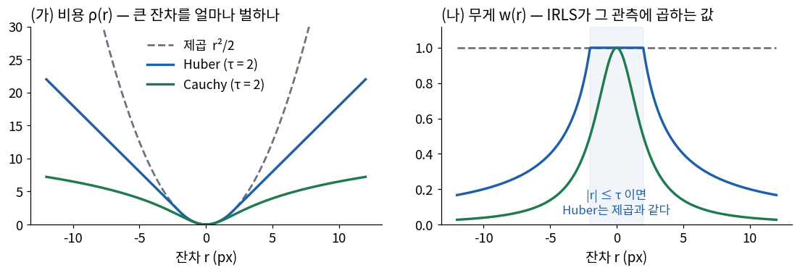

변수를 지우면(marginalization) 무엇이 남나? 그것이 7회의 필터와 어떻게 이어지나?
7회는 한 문장으로 끝났다 — 필터는 과거를 주변화한다. 그래서 지금 상태만 들고 다닐 수 있지만,
루프를 닫아도 지나온 궤적을 고치지 못하고, 지난 측정을 다시 선형화하지 못하고, 지운 자리마다 정보행렬이 차올랐다.
오늘은 반대로 간다. 아무것도 지우지 않는다. 지나온 상태를 전부 변수로 남기고, 측정도 전부 남긴다.
변수가 수천 개로 늘어나는데 오히려 계산이 가벼워진다 — 왜 그런지가 오늘의 이야기다.
7회 ⑤절의 「유도 2」(갱신 = 벌점의 합을 최소로 하는 문제)를 기억해 두자. 오늘 하는 일은 그것을 궤적 전체로 넓히는 것이다.
한 장 요약
단계
무엇이 나오나
절
사후분포의 분해
Full SLAM 사후분포 = 사전 × 운동 조각들 × 측정 조각들의 곱
①②
\(-\log\)
곱이 합으로 — 가중 최소제곱 \(\tfrac12\sum_i\lVert\mathbf{e}_i\rVert^2_{\Sigma_i}\). 조각 하나가 팩터 하나
③
선형화
정규방정식 \(\Lambda\boldsymbol\delta = -\mathbf{b}\). 팩터가 잇는 변수 쌍만 0이 아니다 — 희소
7회 ①절에서 SLAM을 확률로 세울 때 두 판이 있었다. 지금 상태만 남기는 Online SLAM과, 지나온 궤적까지 남기는 Full SLAM이다.
$$
p(\mathbf{x}_{0:K},\ \mathbf{l}_{1:N} \mid \mathbf{z}_{1:K},\ \mathbf{u}_{1:K})
\qquad\text{Full SLAM — 오늘 구하는 것}
$$
왜 굳이 지나온 궤적까지 구해야 할까? 7회 ⑧절의 루프 그림을 떠올리면 된다. EKF-SLAM은 루프를 닫는 순간
지금 위치와 표시 여덟 개를 상관을 타고 고쳤지만, 지나온 궤적은 이미 상태에 없어서 그대로였다.
지나온 자세가 변수로 살아 있어야 루프가 그것까지 고칠 수 있다. 같은 이유로, 측정이 남아 있어야 추정이 좋아진 뒤 다시 선형화할 수 있다.
물론 변수가 많아진다. EuRoC V1_01의 영상 2,912장을 모두 자세로 두고 점 수천 개를 더하면 변수가 수만 개다.
7회의 공분산 \(P\)였다면 원소가 수억 개였을 것이다. 그런데 ④절에서 볼 것처럼 이 문제의 정보행렬은 거의 비어 있고,
그 덕분에 한꺼번에 푸는 것이 가능하다.
② 사후분포의 분해
수만 개 변수의 결합분포를 어떻게 다룰까? 7회 ②절의 네 규칙과 마르코프 가정 두 개(M1 · M2)로
이 분포를 작은 조각들의 곱으로 쪼갤 수 있다. 랜드마크 전체를 \(\mathbf{L} = \mathbf{l}_{1:N}\)으로 줄여 쓴다.
$$
\begin{aligned}
p(\mathbf{x}_{0:K}, \mathbf{L} \mid \mathbf{z}_{1:K-1}, \mathbf{u}_{1:K})
&= p(\mathbf{x}_K \mid \mathbf{x}_{0:K-1}, \mathbf{L}, \mathbf{z}_{1:K-1}, \mathbf{u}_{1:K})\
p(\mathbf{x}_{0:K-1}, \mathbf{L} \mid \mathbf{z}_{1:K-1}, \mathbf{u}_{1:K})
&&\text{규칙 1} \\
&= p(\mathbf{x}_K \mid \mathbf{x}_{K-1}, \mathbf{u}_K)\
p(\mathbf{x}_{0:K-1}, \mathbf{L} \mid \mathbf{z}_{1:K-1}, \mathbf{u}_{1:K-1})
&&\text{(M1) · } \mathbf{u}_K\text{는 그 전 상태에 대해 알려 주지 않는다}
\end{aligned}
$$
마지막 인자가 한 스텝 전의 같은 분포다. 이 두 단계를 \(K\)에서 1까지 되풀이하면 사전정보만 남는다.
측정 \(\mathbf{z}_k\)가 여러 랜드마크를 본 측정 \(\mathbf{z}_{kj}\)들의 묶음이고 그 잡음이 서로 독립이면(규칙 4), 측정 조각도 랜드마크마다 곱으로 쪼개진다.
6회에서 「40년 동안 바뀌지 않은 한 줄」이라고 했던 식이 이것이다. 가우스가 1809년에 최소제곱을 정당화할 때 쓴 논리
— 오차가 가우시안이면 가장 그럴듯한 답은 제곱합을 최소로 하는 답이다 — 와 똑같다.
\(\Sigma_i^{-1}\)이 가중치 역할을 한다. 정밀한 센서(작은 \(\Sigma\))의 잔차는 크게, 거친 센서의 잔차는 작게 센다.
🆕 백색화 (whitening) — 가중치를 잔차 안으로 넣는다
\(\Sigma^{-1} = L^\top L\)로 쪼개면(촐레스키 분해 — 프랑스 육군 장교 André-Louis Cholesky(1875~1918)가 측량 계산을 위해 만든 분해)
\(\lVert\mathbf{e}\rVert^2_\Sigma = \lVert L\mathbf{e}\rVert^2\)이다. 그래서 잔차에 \(L\)을 미리 곱해 두면 가중치 없는 보통 최소제곱이 된다.
1차원이면 \(L = 1/\sigma\) — 「잔차를 표준편차로 나눈다」는 뜻이다. 아래 숫자 예제에서 모든 잔차를 \(\sigma = 0.1\) m로 나누는 것이 이것이다.
팩터그래프
②절의 곱을 그림으로 그리면 팩터그래프가 된다. 변수는 동그라미, 조각(팩터)은 네모로 그리고, 네모를 그것이 쓰는 변수들과 선으로 잇는다.
가장 단순한 경우 — 1차원 직선 위의 자세 다섯 개를 주행 측정 넷과 사전정보 하나로 잇는 사슬 — 를 먼저 본다.

(가) 변수는 원, 팩터는 네모다. (나) 정보행렬 \(\Lambda\)에서 0이 아닌 칸은 (가)의 네모가 함께 잇는 변수 쌍과 정확히 같다.
(다) 그 역행렬인 공분산은 25칸이 모두 0이 아니다. 7회의 필터가 들고 다니던 것은 (다)이고, 오늘 들고 다니는 것은 (나)다.
🆕 팩터그래프 (factor graph)
확률분포가 「변수 몇 개씩만 쓰는 함수(팩터)들의 곱」으로 쪼개질 때 그 구조를 그린 이분 그래프. 2000년 무렵 통신 부호 이론에서 정리됐고,
Frank Dellaert(조지아 공대)와 Michael Kaess가 SLAM을 이 그림으로 정리하면서(√SAM 2006, iSAM 2008) 이 분야의 표준 언어가 됐다.
7회의 그래픽 모델과 달리 화살표가 없다 — 「누가 누구를 만드나」가 아니라 「어느 조각이 어느 변수를 쓰나」만 그린다.
④ 선형화와 정규방정식
\(F(\mathcal{X})\)는 \(f\)와 \(h\)가 비선형이라 한 번에 최소화할 수 없다. 7회의 EKF처럼 지금 추정값 \(\bar{\mathcal{X}}\) 근처에서 펴되,
이번에는 한 번 펴고 끝내지 않고 되풀이한다. 먼저 한 번 펴는 법이다.
지금 자리에서 \(\boldsymbol\delta\)만큼 움직였을 때 잔차를 1차까지 편다(회전이 끼면 「움직인다」의 뜻은 ⑥절에서 정한다).
가운데 항은 \(\mathbf{e}_i^\top\Sigma_i^{-1}J_i\boldsymbol\delta\)가 교차항으로 두 번 나온 것을 \(\tfrac12\)과 약분한 것이다(\(\Sigma_i^{-1}\)이 대칭이라 두 교차항이 같다).
2차식의 최솟값은 기울기가 0인 곳이다. \(\boldsymbol\delta\)로 미분하면 가운데 항에서 \(\mathbf{b}\), 마지막 항에서 \(\Lambda\boldsymbol\delta\)가 나온다.
이 식을 정규방정식이라고 한다. 7회에서 정보행렬을 \(\Lambda\)로 썼던 것과 같은 글자를 쓴 데는 이유가 있다.
\(\Lambda\)는 \(F\)의 2차 미분(헤시안)의 근사이고, 가우시안 MAP 문제에서 헤시안은 사후분포의 정보행렬이다
(7회 ⑤절 유도 2에서 \(J\)의 헤시안이 \((P^-)^{-1} + H^\top W^{-1}H\)였던 것과 같다).
그래서 최적점에서의 \(\Lambda^{-1}\)이 추정의 공분산이 된다.
팩터 하나가 \(\Lambda\)에 남기는 것
\(\Lambda = \sum_i J_i^\top\Sigma_i^{-1}J_i\)는 팩터마다 조각 하나씩을 더한 것이다. 조각 하나는 어떻게 생겼을까?
팩터 \(i\)가 변수 \(p\)와 \(q\) 둘만 쓴다면 \(J_i\)는 그 두 열 블록만 0이 아니다: \(J_i = [\ \cdots\ 0\ \ A\ \ 0\ \cdots\ 0\ \ B\ \ 0\ \cdots\ ]\).
자세끼리는 운동 팩터로만, 자세와 랜드마크는 측정 팩터로만 이어진다. 랜드마크끼리를 잇는 팩터는 없다.
자세 \(K\)개, 랜드마크 \(N\)개, 한 자세가 랜드마크를 평균 \(c\)개 보면 0 아닌 블록 수는 대략 \(K + N + 2K + 2cK\)개다.
전체 블록 수 \((K+N)^2\)에 비하면 거의 비어 있다.
1차원 예제 — 자세 넷, 랜드마크 둘, 루프 하나
정규방정식을 손으로 한 번 조립해 본다. 상황부터 세운다 (src/graph_numbers.py ①).
1차원 직선 위의 로봇 자세 \(x_0, x_1, x_2, x_3\)과 랜드마크 \(a, b\). 참값은 \(x = 0, 1, 2, 3\) m, \(a = 1.4\) m, \(b = 2.6\) m다(로봇은 모른다).
사전정보 \(x_0 = 0\). 주행 측정 셋 \(x_{k} - x_{k-1}\) = 1.10 · 0.90 · 1.05 m.
랜드마크 측정 다섯 — 부호 있는 거리 \(l - x\): \(x_0\)에서 \(a\)까지 1.45, \(x_1\)에서 \(a\) 0.35 · \(b\) 1.62, \(x_2\)에서 \(b\) 0.58,
그리고 \(x_3\)에서 다시 \(a\)를 봤다: −1.62 m. 마지막 것이 루프다.
모든 측정의 표준편차 \(\sigma = 0.1\) m. 모든 무게가 \(1/\sigma^2 = 100\)으로 같으므로 아래 행렬은 \(\sigma^2\)을 곱해 정수로 보인다.
모든 팩터가 선형이라 야코비안은 상수다. 주행 팩터 \(e = x_k - x_{k-1} - u\)의 \(J\)는 \((x_{k-1}, x_k)\) 칸에 \((-1, +1)\),
측정 팩터 \(e = l - x - z\)의 \(J\)는 \((x, l)\) 칸에 \((-1, +1)\)이다. 조각 하나는 \(\begin{bmatrix}1 & -1\\ -1 & 1\end{bmatrix}\)이고, 그것을 해당 칸에 아홉 번 더한다.
대각 칸은 「그 변수에 붙은 팩터 수」이고(\(x_1\)은 주행 둘 + 측정 둘 = 4), 비대각 칸의 \(-1\)은 「둘을 잇는 팩터 하나」다.
선형 문제라 출발점 \(\bar{\mathcal{X}} = \mathbf{0}\)에서 한 번 풀면 끝난다. 그때 \(\mathbf{e}_i = -z_i\)이므로 \(\mathbf{b} = -\sum_i J_i^\top z_i/\sigma^2\)이고,
루프 팩터 하나가 들어가자 \(x_3\)이 3.0967 → 3.0807로 참값 3에 가까워졌고, 지나온 \(x_1\), \(x_2\)도 함께 움직였다.
7회 EKF-SLAM이 하지 못하던 것이다. 표준편차(\(\Lambda^{-1}\)의 대각의 제곱근)는 \(x_0\)부터 0.100 · 0.128 · 0.143 · 0.146 m, \(a\) 0.128 · \(b\) 0.148 m다.
그리고 \(\Lambda\)는 22/36칸만 차 있는데 \(\Lambda^{-1}\)은 36/36칸이 다 찼다 — 8회의 문제를 \(\Lambda\)로 푸는 이유다.
교재의 \(\Omega,\ \xi\)와의 대응
Probabilistic Robotics 11장의 GraphSLAM은 같은 문제를 조금 다른 꼴로 쓴다. 갱신량 \(\boldsymbol\delta\) 대신 변수 \(\mathbf{y}\) 자체의 2차식으로 정리한다.
선형화한 비용을 \(\mathcal{X} = \bar{\mathcal{X}} + \boldsymbol\delta\)로 다시 쓰면 (벡터 공간 변수라고 하자)
뉴턴법은 비용을 진짜 2차 미분까지 써서 2차식으로 근사하고 그 최소점으로 간다. 최소제곱 비용(백색화해서 \(F = \tfrac12\sum_k r_k^2\), \(r_k\)는 스칼라 잔차)을 두 번 미분하면
$$
\nabla F = J^\top\mathbf{r},
\qquad
\nabla^2 F = J^\top J + \sum_{k} r_k\,\nabla^2 r_k
$$
가우스-뉴턴은 뒤의 합을 버린 것이다. 그 항에는 잔차 \(r_k\)가 곱해져 있으니, 답 근처에서 잔차가 작으면 그 항도 작다.
잡음 없는 데이터라면 답에서 잔차가 정확히 0이라, 답에 가까워질수록 GN은 뉴턴법과 같아지고 맞는 자릿수가 매 걸음 두 배로 는다(2차 수렴).
덤으로 2차 미분을 계산할 필요가 없다. 그래서 \(J^\top J\)(가중치가 있으면 \(\Lambda\))를 흔히 「가우스-뉴턴 헤시안」이라고 부른다.
🆕 Newton · Hesse · Levenberg · Marquardt — 사람 이름이다
Isaac Newton (1643~1727)
영국의 물리학자·수학자. 함수를 지금 점에서 근사해 영점(또는 최솟값)으로 다가가는 반복법에 그의 이름이 붙었다.
Ludwig Otto Hesse (1811~1874)
독일의 수학자. 2차 미분을 모은 행렬을 헤시안이라고 부른다.
Kenneth Levenberg (1944) · Donald Marquardt (1929~1997, 1963)
Levenberg는 미국 육군 병기창에 있을 때 정규방정식에 \(\lambda I\)를 더하는 아이디어를 냈고, 통계학자 Marquardt가 1963년에 \(I\) 대신 \(\mathrm{diag}(J^\top J)\)를 쓰게 다듬었다.
걸음을 거절하는 규칙 — LM
그럼 GN만 쓰면 될까? 1차로 편 식 \(\mathbf{e}+J\boldsymbol\delta\)는 지금 자리 근처에서만 맞는다. 출발점이 답에서 멀면 GN은 그 식이 먼 곳까지 맞는다고 믿고 끝까지 걸어가서,
비용이 오히려 늘어날 수 있다(⑨절에서 실제로 본다). 고치는 방법은 상식적이다 — 걸어 보고 비용이 늘었으면 그 걸음을 버리고 보폭을 줄여 다시 푼다.
보폭은 정규방정식의 대각에 무언가를 더해서 줄인다.
\(\lambda D\boldsymbol\delta \approx -\mathbf{b}\), 즉 \(\boldsymbol\delta \approx -\tfrac1\lambda D^{-1}\mathbf{b}\) — 변수마다 크기를 맞춘 기울기의 반대 방향으로 작게
느리지만 비용을 늘리지 않는다
걸음이 비용을 줄였으면 받아들이고 \(\lambda\)를 줄이고(예: 1/10), 늘렸으면 버리고 \(\lambda\)를 키운다(예: ×10). 이것이 Levenberg-Marquardt(LM)다.
\(D\)를 \(I\)가 아니라 \(\mathrm{diag}(\Lambda)\)로 두는 것은, 변수마다 단위가 달라도(미터와 라디안) 감쇠가 고르게 걸리게 하기 위해서다.
신뢰 영역으로 본 LM
LM에는 다른 읽기 방법이 하나 더 있다. 1차로 편 모델을 반경 \(\Delta\) 안에서만 최소화하라고 하면 어떻게 될까?
제약이 걸린 최소화는 라그랑주 승수 \(\lambda\ge0\)을 붙여 푼다. \(\tfrac12\sum\lVert\mathbf{e}_i+J_i\boldsymbol\delta\rVert^2_{\Sigma_i} + \tfrac\lambda2(\boldsymbol\delta^\top D\boldsymbol\delta - \Delta^2)\)를 \(\boldsymbol\delta\)로 미분해 0으로 놓으면
LM의 식이 그대로 나온다. \(\lambda\)를 키운다는 것은 「1차 모델을 믿을 수 있는 반경」을 줄이는 것이다.
이 관점의 이름이 신뢰 영역(trust region)이다. 답 근처에서는 \(\lambda\)가 작아져 GN과 같아지므로, 둘 중 하나를 고르는 것이 아니라 LM 안에 GN이 들어 있다고 보면 된다.
⑥ manifold 위의 최소제곱
GN의 4단계에서 「\(\bar{\mathcal{X}}\boxplus\boldsymbol\delta\)」라고 썼다. 위치는 그냥 더하면 된다. 그런데 회전은 더할 수 없다 — \(R + \delta R\)은 회전행렬이 아니다(3회).
그럼 회전이 낀 변수는 어떻게 한 걸음 움직일까?
3회에서 이 문제를 위해 만든 것이 \(\boxplus\)였다. 회전 \(R\)은 3차원 manifold \(\mathbf{SO}(3)\) 위의 점이고, 그 점의 tangent space는 3차원 벡터 공간이다.
최적화의 변수는 manifold 위의 점이지만, 한 걸음 \(\boldsymbol\delta\)는 tangent space의 벡터로 잰다.
$$
\begin{aligned}
R \boxplus \delta\boldsymbol\theta &= R\,\mathrm{Exp}(\delta\boldsymbol\theta),
&\quad \delta\boldsymbol\theta &\in \mathbb{R}^3
&&\text{right perturbation (3회 규약)} \\
T \boxplus \boldsymbol\xi &= T\,\mathrm{Exp}(\boldsymbol\xi),
&\quad \boldsymbol\xi &= (\boldsymbol\rho,\ \boldsymbol\phi) \in \mathbb{R}^6
&&\mathbf{SE}(3)\text{: 이동 3 · 회전 3} \\
\mathbf{l} \boxplus \delta\mathbf{l} &= \mathbf{l} + \delta\mathbf{l}
&&&&\text{점은 그냥 더한다}
\end{aligned}
$$
이렇게 하면 세 가지가 동시에 풀린다. 첫째, 갱신 뒤에도 \(R\)은 언제나 회전행렬이다. 둘째, 변수 개수가 자유도와 같다 —
쿼터니언 네 숫자를 그대로 변수로 두면 \(\lVert q\rVert=1\) 방향으로 비용이 변하지 않아 \(\Lambda\)가 특이해지는데(⑨절 게이지와 같은 문제), tangent space는 정확히 3차원이다.
셋째, 야코비안을 \(\boldsymbol\delta = \mathbf{0}\)에서 계산하므로 특이점이 없다(오일러각의 짐벌락이 없다).
야코비안의 정의가 바뀌는 것이 핵심이다. 변수 \(R\)의 원소로 미분하는 것이 아니라, 「지금 \(R\)에서 \(\delta\boldsymbol\theta\)만큼 돌렸을 때 잔차가 얼마나 변하나」를 미분한다.
3회에서 유도한 \(\mathrm{Exp}(\delta\boldsymbol\theta) \approx I + [\delta\boldsymbol\theta]_\times\)가 이 미분을 계산하는 도구다.
7회 ESKF에서 자세 오차를 \(\delta\boldsymbol\theta\)로 둔 것과 같은 생각이다 — 필터에서는 그것을 오차 상태라고 불렀고, 최적화에서는 갱신량이라고 부를 뿐이다.
⑧절과 ⑨절의 야코비안이 전부 이 정의로 계산된다.
⚠️ 야코비안과 갱신이 같은 perturbation이어야 한다
야코비안을 right perturbation(\(R\,\mathrm{Exp}(\delta\boldsymbol\theta)\))으로 유도했으면 갱신도 \(R \leftarrow R\,\mathrm{Exp}(\delta\boldsymbol\theta)\)여야 한다.
한쪽이 left(\(\mathrm{Exp}(\delta\boldsymbol\theta)R\))면 정규방정식이 가리키는 방향과 실제로 움직인 방향이 달라, 수렴이 느려지거나 엉뚱한 곳에 멈춘다.
3회 ⑧절에서 규약을 하나로 정한 이유가 여기서 회수된다.
⑦ GraphSLAM — 랜드마크를 소거하고 푼다
정규방정식 \(\Lambda\boldsymbol\delta = -\mathbf{b}\)는 변수가 수만 개다. 그대로 풀어야 할까?
Thrun과 Montemerlo가 2006년에 정리한 GraphSLAM 알고리즘은 랜드마크를 먼저 소거해 자세만의 작은 문제로 만든 뒤 풀고, 랜드마크는 나중에 되살린다.
변수를 자세 \(\mathbf{x}\)와 랜드마크 \(\mathbf{l}\) 두 덩이로 나눠 정규방정식을 블록으로 쓴다.
\(\tilde\Lambda\)는 7회 ④절에서 처음 본 Schur 보수다 — 이번에는 정보행렬에서 \(\Lambda_{ll}\)에 대한 것이다.
7회 ④절 표에 따르면 정보 형식의 Schur 보수는 주변화다. 즉 \(\tilde\Lambda\)는 「랜드마크를 적분해 지운 뒤 자세들만의 사후분포」의 정보행렬이다.
GraphSLAM 알고리즘은 이 관찰을 네 단계로 쓴다.
왜 이것이 싸게 먹힐까? \(\Lambda_{ll}\)이 블록 대각이기 때문이다. ④절에서 본 대로 랜드마크끼리를 잇는 팩터가 없으니,
\(\Lambda_{ll}^{-1}\)은 랜드마크마다 작은 블록(3차원이면 3×3)을 하나씩 뒤집는 것으로 끝난다. 큰 행렬을 뒤집는 일이 없다.
④절의 1차원 예제로 따라가 본다. 랜드마크 블록은 \(a\)와 \(b\)가 이어져 있지 않아 대각이다.
답이 같다. 눈여겨볼 것은 \(\tilde\Lambda\)의 모양이다. 원래 자세끼리는 이웃만 이어져 있었는데(띠 모양),
소거 뒤에는 \((x_0, x_3)\)과 \((x_1, x_3)\) 칸에 \(-4\)가 새로 생겼다. 셋이 모두 \(a\)를 봤기 때문이다.
지운 변수(\(a\))가 잇던 변수들(\(x_0, x_1, x_3\))끼리 직접 이어진 것이다 — 이것을 fill-in이라고 한다. ⑩절에서 다시 본다.
GraphSLAM의 소거는 7회 필터의 소거와 방향이 반대다.
필터는 지나간 자세를 지워서 랜드마크끼리 fill-in이 생겼고(7회 ⑧절의 상관 그림), 그 결과 \(O(N^2)\)이 됐다.
GraphSLAM은 랜드마크를 지워서 자세끼리 fill-in이 생긴다. 자세는 랜드마크보다 훨씬 적으므로 이쪽이 가볍다.
그리고 소거된 문제 \(\tilde\Lambda\)는 「자세들 사이의 상대 구속」만 남은 그래프 — 다음 절의 자세그래프 — 와 같은 모양이다.
⑧ 자세그래프
랜드마크를 아예 변수로 두지 않으면 어떨까? 자세 \(T_0, \dots, T_K\)만 변수로 두고, 팩터는 두 자세 사이의 상대 자세 측정만 둔다.
이것이 자세그래프(pose graph)다. 1997년 Lu와 Milios가 레이저 스캔 정합으로 처음 제안했다.
상대 자세 측정 \(\tilde T_{ij}\)는 여러 곳에서 온다.
주행 측정 — 바퀴 오도메트리 · IMU 사전적분(10회) · 연속한 영상 사이의 상대 자세
루프 측정 — 예전에 왔던 곳을 알아보고(13회 장소 인식) 두 자세 사이의 상대 자세를 기하로 잰 것
랜드마크를 소거한 결과 — ⑦절의 \(\tilde\Lambda\)처럼, 같은 점을 본 자세끼리 남은 연결
시각 SLAM에서 자세그래프는 보통 번들조정(⑨절)으로 다듬은 지역 지도 위에 얹는 전역 골격으로 쓴다.
루프가 닫히면 점 수만 개를 다시 다 풀지 않고, 자세 수백 개만 움직여 큰 틀을 바로잡는다. ORB-SLAM의 essential graph와 VINS-Mono의 4자유도 자세그래프(13회)가 이 구조다.
상대 자세 잔차와 야코비안
측정이 맞다면 「\(i\)에서 본 \(j\)」 \(T_i^{-1}T_j\)가 측정 \(\tilde T_{ij}\)와 같아야 한다. 둘이 얼마나 다른지를 tangent space의 벡터로 잰다.
잔차가 작으면 \(J_r^{-1}(\mathbf{e}) \approx I\)이므로 두 야코비안은 \(I\)와 \(-\mathrm{Ad}_{T_j^{-1}T_i}\)에 가깝다.
\(-\mathrm{Ad}\)는 「\(i\)의 좌표에서 본 흔들림을 \(j\)의 좌표에서 본 흔들림으로 옮긴다」는 뜻이다.
🆕 \(\mathbf{SE}(3)\)의 Adjoint
3회에서 \(\mathbf{SO}(3)\)의 Adjoint는 \(\mathrm{Ad}_R = R\)이었다 — \(R\,\mathrm{Exp}(\boldsymbol\phi)R^\top = \mathrm{Exp}(R\boldsymbol\phi)\).
\(T = (R, \mathbf{t})\)이고 tangent 벡터를 \((\boldsymbol\rho, \boldsymbol\phi)\)(이동, 회전) 순서로 두면
\(\mathrm{Ad}_T = \begin{bmatrix} R & [\mathbf{t}]_\times R \\ 0 & R\end{bmatrix}\)이다.
오른쪽 위 블록은 「원점에서 떨어진 곳에서 회전하면 이동도 생긴다」는 효과다. \(\mathbf{t} = \mathbf{0}\)이면 대각에 \(R\) 둘이 놓인 꼴로 돌아간다.
2차원 루프 예제
상황을 세운다 (src/graph_numbers.py ③). 반지름 3 m 원 위의 자세 16개를 한 바퀴 돈다. 이웃 자세 사이의 주행 측정에
위치 5 cm · 방향 2°의 잡음이 섞였다. 마지막 자세에서 출발점을 알아봐 루프 측정 하나(15 → 0)가 생겼다.
2차원이라 자세는 \((x, y, \theta)\) 셋이고, 잔차는 위 \(\mathrm{Log}\)의 2차원판을 쓴다.
(가) 주행만 이어 붙이면 오차가 쌓여 끝점이 출발점에서 0.60 m 벗어난다. (나) 루프 팩터 하나를 넣고 가우스-뉴턴을 돌리면 궤적 전체가 정답 원으로 당겨진다.
(다) \(\Lambda\)의 블록 패턴 — 이웃 자세를 잇는 띠와, 루프가 만든 모서리 두 칸(빨강)뿐이다.
$$
\begin{aligned}
&\text{루프 측정의 처음 잔차:} &&(0.642\ \text{m},\ 0.191\ \text{m},\ 6.01°) \\
&\text{GN 비용 } F: &&94.23 \ \to\ 1.779 \ \to\ 0.7827 \ \to\ 0.7827 \\
&\text{끝점 오차:} &&0.599\ \text{m} \ \to\ 0.026\ \text{m} \\
&\text{궤적 RMS 오차:} &&0.276\ \text{m} \ \to\ 0.090\ \text{m}
\end{aligned}
$$
두 반복 만에 수렴했다. 0 아닌 3×3 블록은 256개 중 48개(대각 16 + 이웃 30 + 루프 2)다.
최종 비용의 두 배 \(\chi^2 = 2F = 1.57\)은 「잔차 48개 − 움직이는 변수 45개 = 자유도 3」과 비교할 수 있다 —
모형과 잡음이 맞다면 \(\chi^2\)의 기댓값은 자유도와 같다. 크기가 비슷하니 잡음 설정이 데이터와 어긋나지 않았다고 볼 수 있다.
「움직이는 변수 45개」에서 3이 빠진 것은 첫 자세를 고정했기 때문이다. 자세그래프의 팩터는 전부 상대 측정이라,
궤적 전체를 통째로 옮기거나 돌려도 비용이 같다. 그 3자유도(2차원 이동 2 + 회전 1)를 고정하지 않으면 \(\Lambda\)가 특이해서 풀리지 않는다.
이것을 게이지 자유도라고 한다 — ⑨절에서 번들조정의 7자유도로 자세히 본다.
시각-관성 SLAM에서는 이 자유도가 4다. 7회 ⑦절 ESKF 예에서 가속도계가 중력 방향을 재기 때문에 롤·피치는 보이고 yaw는 안 보였다.
그래서 VIO의 자세그래프는 위치 3 + yaw 1만 움직이는 4자유도 자세그래프가 된다(VINS-Mono, 13회).
롤·피치까지 움직이게 두면 루프가 IMU가 정해 준 「아래 방향」을 망가뜨린다.
⑨ 번들조정
이번에는 랜드마크를 지우지 않고 카메라 자세와 3차원 점을 모두 변수로 두고, 측정 팩터로 재투영 잔차(4회)를 쓴다.
카메라 \(k\)가 점 \(j\)를 픽셀 \(\mathbf{z}_{kj}\)에서 봤다면 팩터 하나가 생긴다.
이 문제를 번들조정(bundle adjustment, BA)이라고 부른다. 카메라마다 점들로 뻗어 나가는 광선 다발(bundle)을 통째로 조정(adjust)해
모든 광선이 관측 픽셀을 지나게 만든다는 뜻이다. 사진측량에서 100년 가까이 쓰인 방법이고, 1999년 Triggs 외의 정리 논문으로 컴퓨터비전의 표준이 됐다.
지금부터는 정답을 아는 합성 장면 하나를 끝까지 쓴다 (src/ba_numbers.py).

합성 장면 — 벽 세 면의 점 500개와, 그 앞을 지나는 카메라 10대. 정답 자세와 정답 점을 넣으면 재투영 잔차가 정확히 0이 되는 데이터다.
무엇
개수
어떻게 셌나
관측 \((k, j)\)
4,188
카메라 셋 이상에 보이는 점만 남겼다. 점 하나를 본 카메라 수 최소 3 · 중앙 10
잔차 성분 \(m\)
8,376
관측 하나가 \(u\) · \(v\) 둘
변수 \(n\)
1,560
\(10\times6 + 500\times3\)
투영 야코비안 — 세 조각으로 나눠 잇는다
카메라 하나의 갱신량은 6개로, 순서는 \((\delta\mathbf{t}, \delta\boldsymbol\theta)\)다. ⑥절의 \(\boxplus\)를 회전과 이동으로 나눠 쓰면
\(\mathbf{t}\)에 \(R\)이 곱해진 것은 \(\delta\mathbf{t}\)도 회전과 마찬가지로 카메라 좌표계에서 본 이동이라는 뜻이다(\(\mathbf{SE}(3)\)의 \(\mathrm{Exp}\)와 1차까지 같다).
야코비안은 계산이 지나가는 길을 세 칸으로 끊어 구한다 — 자세·점 → 카메라 좌표 \(\mathbf{p}_C\) → 픽셀.
첫째 조각 — 픽셀을 카메라 좌표로. \(\mathbf{p}_C = (X, Y, Z)\), \(u = f_uX/Z + c_u\), \(v = f_vY/Z + c_v\)이다.
\(Z\)가 분모에 있다. EuRoC cam0의 \(f_u = 458.654\)로 깊이 3 m 점이면 \(f_u/Z = 152.9\) px/m — 점이 옆으로 1 cm 움직이면 픽셀은 1.5 px 움직인다.
먼 점일수록 픽셀이 덜 움직이고, 거꾸로 픽셀로는 먼 점의 위치를 잘 모른다(5회의 깊이 불확실도와 같은 이야기).
둘째 조각 — 카메라 좌표를 자세로. \(\mathbf{p}_C = R^\top(\mathbf{l} - \mathbf{t})\)에 위 갱신을 넣는다. \(\big(R\,\mathrm{Exp}(\delta\boldsymbol\theta)\big)^\top = \mathrm{Exp}(-\delta\boldsymbol\theta)R^\top\)이다.
손으로 유도한 야코비안은 같은 갱신 방식으로 유한차분한 값과 비교해 확인한다. 이 장면에서 세 조각의 상대오차는 각각
\(5\times10^{-8}\) · \(3\times10^{-9}\) · \(2\times10^{-7}\)였다. 둘째 조각의 \([\mathbf{p}_C]_\times\) 부호를 뒤집은 판은 회전 블록만 상대오차 2.0으로 바로 드러난다.
희소성과 Schur 보수
잔차 \(\mathbf{e}_{kj}\)는 카메라 \(k\)와 점 \(j\)만 안다. 그래서 ④절의 희소성 정리에 따라 점끼리는 \(\Lambda\)에서 서로를 모른다.
변수를 카메라(c)와 점(p)으로 나눠 블록으로 쓰면
번들조정에서는 이것을 축소 카메라 시스템(reduced camera system)이라고 부른다.
\(\Lambda_{pp}^{-1}\)은 3×3 역행렬 500개다. 작은 \(S\)를 풀어 \(\boldsymbol\delta_c\)를 얻고, 점마다 따로 \(\boldsymbol\delta_p\)를 구한다.
이 장면(첫 카메라를 고정한 1554×1554)에서 통째로 풀면 485.5 ms, Schur로 풀면 21.1 ms였고 두 답의 차는 \(10^{-12}\)이다.
크기로는 한 변이 1554 → 54로 줄었다. 점이 많을수록 이 비율은 커진다 — 카메라 10대에 점 2000개면 한 변이 101배 준다.
게이지 자유도
잔차가 0이 되면 답은 하나로 정해진 것일까? 모든 자세와 모든 점에 같은 닮음변환을 걸어 보자.
회전 \(Q\), 이동 \(\mathbf{c}\), 배율 \(s > 0\)이다.
카메라 좌표가 통째로 \(s\)배가 됐을 뿐이다. 픽셀은 \(X/Z\), \(Y/Z\)로 정해지므로 \(s\)가 약분되어 재투영 잔차는 하나도 변하지 않는다.
지도 전체를 옮기고(3) 돌리고(3) 키워도(1) 비용이 같다 — 7자유도가 정해지지 않은 채 떠 있다. 배율 1이 5회의 단안 스케일 모호성이다.
비용이 변하지 않는 방향 \(\boldsymbol\delta\)가 있다는 것은 모든 \(J_i\boldsymbol\delta = \mathbf{0}\)이라는 뜻이고, 그러면 \(\Lambda\boldsymbol\delta = \mathbf{0}\) —
\(\Lambda\)의 고윳값 중 그 개수만큼이 0이다. 합성 장면의 정답 자리에서 \(\Lambda\)의 고윳값을 가장 큰 값으로 나눠 봤다.
무엇을 묶었나
\(10^{-12}\) 밑 고윳값
그다음 고윳값
아무것도
7개
\(5\times10^{-7}\) — 열 자리 넘게 떨어져 있다
첫 카메라 자세(6)
1개
배율이 남았다
첫 카메라 + 카메라 0↔9 거리 하나
0개
\(3\times10^{-8}\)
0인 고윳값이 남아 있으면 정규방정식이 특이해 풀리지 않는다. 그래서 무엇인가를 묶어야 한다 — 이것을 게이지 고정이라고 한다.
⑧절 자세그래프에서 첫 자세를 고정한 것이 3자유도짜리 게이지 고정이었다. 문제마다 떠 있는 자유도 수가 다르다.
문제
게이지
왜
2차원 자세그래프
3
평면 이동 2 + 회전 1
3차원 자세그래프 · 스테레오 BA
6
이동 3 + 회전 3 (거리를 아니까 배율은 정해진다)
단안 BA
7
+ 배율 1
단안 + IMU (VIO)
4
가속도계가 배율과 롤·피치를 정한다 — 이동 3 + yaw 1 (11 · 13회)
출발점이 멀 때 — GN과 LM
⑤절에서 「GN은 출발점이 멀면 비용을 늘릴 수 있다」고 했다. 이 장면에서 확인한다. 정답에서 자세를 2° · 5 cm, 점을 10 cm쯤 흔든 가까운 출발점에서
GN의 재투영 오차 RMS는 13.7 → 0.39 → \(2.5\times10^{-3}\) → \(7.5\times10^{-7}\) → \(2.7\times10^{-13}\) px로 떨어졌다.
지수가 −3 → −7 → −13으로 가는, 맞는 자릿수가 두 배씩 붙는 2차 수렴이다.
같은 장면, 세 판. 출발점을 자세 10° · 30 cm, 점 1 m로 멀리 두면 GN(빨강)은 첫 걸음에 121 → 2,381 px로 스무 배 나빠지고, 열 번을 가도 4.4 px에 머문다.
같은 출발점에서 LM(파랑)은 45.7 → 14.5 → 9.5 → 2.4 → 0.80 → 0.084 px로 내려가 9번째 반복에 \(10^{-8}\) px 밑으로 간다.
GN의 첫 걸음 뒤를 들여다보면 관측 잔차의 중앙값은 38 px인데, 점 하나가 카메라 두 대의 뒤로 넘어가 그 관측의 잔차가 21만 px이 됐다.
1차로 편 모델이 그 먼 곳까지 맞는다고 믿은 결과다. LM은 그런 걸음을 거절하고 보폭을 줄여 다시 푼다.
강인 커널
지금까지는 모든 측정이 가우시안 잡음만 가졌다고 가정했다. 실제로는 틀린 대응(아웃라이어)이 섞인다 — 9회 프론트엔드가 걸러도 몇 개는 지나간다.
그런 관측이 몇 개 섞이면 최소제곱은 어떻게 될까?
상황: 같은 장면의 모든 관측에 축마다 \(\sigma = 1\) px 잡음을 넣고, 관측 4,188개 중 5 %인 209개를 20~60 px 떨어진 엉뚱한 자리로 옮긴다.
최소제곱은 잔차를 제곱해서 더하므로 1 px 잔차는 비용 0.5, 40 px 잔차는 800이다. 아웃라이어 하나가 정상 관측 1,600개만큼 목소리를 낸다.
그래서 큰 잔차의 목소리를 줄이는 함수 \(\rho\)를 씌운다. 관측 하나의 잔차 크기를 \(r = \lVert\mathbf{e}_{kj}\rVert\), 문턱을 \(\tau\)라 하자.
$$
\rho_{\text{Huber}}(r) =
\begin{cases}
\tfrac12 r^2 & r \le \tau \\
\tau r - \tfrac12\tau^2 & r > \tau
\end{cases},
\qquad
\rho_{\text{Cauchy}}(r) = \tfrac{\tau^2}{2}\log\!\Big(1 + \frac{r^2}{\tau^2}\Big)
$$
Huber는 문턱 안에서는 최소제곱 그대로이고 밖에서는 선형으로 자란다. 두 식은 \(r = \tau\)에서 값과 기울기가 이어진다. Cauchy는 큰 잔차를 더 세게 깎는다.
이 비용을 GN·LM에 어떻게 넣을까? \(\rho\)를 잔차 벡터로 미분하면 답이 보인다. \(\partial r/\partial\mathbf{e} = \mathbf{e}/r\)이므로
즉 강인 비용의 기울기는 「잔차에 무게 \(w\)를 곱한 최소제곱」의 기울기와 같다. 그래서 매 반복 지금 잔차로 \(w\)를 계산하고
정규방정식의 각 팩터에 \(w\)를 곱해 푼다: \(\Lambda = \sum_i w_i J_i^\top\Sigma_i^{-1}J_i\), \(\mathbf{b} = \sum_i w_i J_i^\top\Sigma_i^{-1}\mathbf{e}_i\).
이것을 IRLS(iteratively reweighted least squares, 반복 재가중 최소제곱)라고 한다.

(가) 제곱 비용은 큰 잔차를 제곱으로 벌한다. Huber는 문턱 밖에서 직선, Cauchy는 로그로 자란다. (나) 그 결과 IRLS가 관측에 곱하는 무게 — 큰 잔차일수록 작아진다.
잔차 \(r\) (px)
0.5
1
2
4
10
40
Huber 무게 (\(\tau = 2\))
1.000
1.000
1.000
0.500
0.200
0.050
Cauchy 무게 (\(\tau = 2\))
0.941
0.800
0.500
0.200
0.038
0.002
문턱 \(\tau\)는 「정상 관측의 잔차가 대개 어디까지 오나」로 정한다. 잡음이 축마다 독립이고 표준편차 \(\sigma\)인 가우시안이면 \(r^2/\sigma^2\)은 자유도 2인 카이제곱이고,
자유도 2인 카이제곱은 지수분포라 누적확률이 닫힌 꼴로 나온다 — \(P(r \le a) = 1 - \exp(-a^2/2\sigma^2)\) (Rayleigh 분포).
\(a = 2\sigma\)이면 0.86이다. 그래서 \(\sigma = 1\) px인 이 장면에서 \(\tau = 2\) px로 두면 정상 관측의 86 %는 최소제곱 그대로 두고 그 밖만 깎는다.
방법
회전 최대
위치 최대
점 오차 중앙
점 90 %
점 최대
(아웃라이어 없음 — 기준)
0.094°
0.59 cm
2.54 cm
6.56 cm
18.1 cm
최소제곱 그대로
2.732°
20.3 cm
61.9 cm
96.7 cm
476 cm
Huber \(\tau = 2\) px
0.118°
0.73 cm
2.55 cm
8.03 cm
76.8 cm
최소제곱 그대로는 아웃라이어 5 %에 지도 전체가 끌려갔다 — 점 오차 중앙값이 2.5 cm에서 62 cm가 됐다. Huber를 켜면 중앙값이 아웃라이어 없던 판과 거의 같아진다.
다만 최댓값(76.8 cm)은 기준판(18.1 cm)보다 크다. 무게 0.05라도 0은 아니어서, 관측이 적은 점은 아웃라이어에 조금씩 끌려 있다.
🆕 Huber · Rayleigh · Cauchy · Triggs
Peter J. Huber (1934~)
스위스의 통계학자. 1964년 논문에서 이 함수를 냈다. 아웃라이어에 덜 흔들리는 추정 — 강인 통계(robust statistics) — 의 출발점이다.
Lord Rayleigh (John William Strutt, 1842~1919) · Augustin-Louis Cauchy (1789~1857)
영국의 물리학자와 프랑스의 수학자. 2차원 잡음 벡터의 크기가 따르는 분포와, 꼬리가 두꺼운 분포에 각각 이름이 붙었다. Cauchy 커널은 「잔차가 Cauchy 분포를 따른다」고 놓은 MAP와 같다.
Bill Triggs 외, Bundle Adjustment — A Modern Synthesis (1999)
사진측량 쪽에서 쌓인 번들조정의 지식(희소성 · Schur · 게이지 · 강인 비용)을 컴퓨터비전 쪽에 정리해 넘긴 논문. 오늘 ⑨절의 내용 대부분이 이 논문에 있다.
⑩ marginalization과 fill-in
「아무것도 지우지 않는다」로 시작했지만, 로봇이 몇 시간을 달리면 자세도 수십만 개가 된다. 실시간으로 돌려면 결국 무언가를 지워야 한다.
그럼 어떻게 지워야 정보를 버리지 않을까?
⑦절에서 이미 답을 봤다. 지울 변수를 \(\mathbf{m}\), 남길 변수를 \(\mathbf{r}\)로 나누고 정보행렬의 Schur 보수를 취한다.
7회 ④절의 성질 3(주변분포)을 정보 형식으로 쓴 것이 이것이다. 지운 변수가 남긴 정보는 사라지지 않고 \(\Lambda^\ast\)에 녹아 남은 변수들 위에 얹힌다.
이렇게 변수를 지우는 것을 marginalization이라고 부른다. 남은 \((\Lambda^\ast, \mathbf{b}^\ast)\)는 다음 최적화에서 하나의 팩터처럼 쓰인다 — 이것을 prior 팩터라고 한다.
\((a, b)\) 칸이 0에서 −0.364가 됐다. \(BC^{-1}B^\top\)는 \(B\)가 0이 아닌 줄끼리를 전부 잇는다 — 지운 변수와 이어져 있던 변수들은 지운 뒤 서로 이어진다.
이것이 fill-in의 정체이고, 7회 EKF-SLAM에서 랜드마크끼리 상관이 차오른 이유를 정보행렬 쪽에서 본 것이다.
무엇을 지우나
fill-in이 생기는 곳
결과
지나간 자세 (필터)
그 자세가 본 랜드마크끼리
랜드마크 블록이 꽉 찬다 → \(O(N^2)\) (7회 EKF-SLAM)
랜드마크 (GraphSLAM · BA의 Schur)
그 점을 본 자세끼리
자세 블록이 찬다 — 자세는 적으니 감당할 만하다 (⑦ · ⑨절)
윈도우 밖으로 나가는 가장 오래된 키프레임 (슬라이딩 윈도우)
그 키프레임과 이어진 남은 키프레임 · 점끼리
prior 팩터 하나로 남는다 (12회 VINS-Mono)
슬라이딩 윈도우와 FEJ
VINS-Mono 같은 시스템은 최근 키프레임 열 개 남짓만 변수로 두고(슬라이딩 윈도우), 새 키프레임이 들어오면 가장 오래된 것을 위 식으로 marginalize해 prior 팩터로 만든다.
필터(전부 지운다)와 Full SLAM(아무것도 안 지운다)의 중간이다. 윈도우 안에서는 몇 번이고 다시 선형화하고, 밖은 prior로 요약한다.
여기에 함정이 하나 있다. prior 팩터는 지울 때의 선형화점에서 만든 2차식이다. 그런데 남은 변수들은 그 뒤에도 계속 움직이고, 다른 팩터들은 새 자리에서 다시 선형화된다.
같은 변수가 prior 안에서는 옛 자리의 야코비안으로, 다른 팩터에서는 새 자리의 야코비안으로 쓰이면 — 7회 ⑧절의 일관성 붕괴와 똑같이 —
관측할 수 없는 방향에 가짜 정보가 생긴다. 처방도 같다. prior와 이어진 변수의 야코비안은 처음 추정값(first estimate)에서 계산한 것을 계속 쓴다 — FEJ다.
12회에서 VINS-Mono의 marginalization을 볼 때 이 문단으로 돌아온다.
⑪ 필터와 최적화는 어떻게 이어지나
이제 7회와 오늘을 한 그림에 놓을 수 있다. 같은 사후분포를 두고, 언제 선형화하고 무엇을 지우느냐만 다르다.
가장 단순한 경우로 확인한다 (src/graph_numbers.py ②). ④절 그림의 다섯 자세 사슬 — 사전 \(x_0 = 0\), 한 걸음 1 m, 모든 잡음 분산 1 —
에 마지막으로 \(x_4\)를 직접 재는 측정 \(z = 3.6\)(분산 1)이 왔다고 하자.
마지막 칸이 정확히 같다. 선형·가우시안이면 칼만 필터의 답은 Full SLAM 답의 마지막 칸(과 그 주변 공분산)이다. 필터는 그 칸 하나를 싸게 구하는 방법이었다.
그리고 일괄 풀이는 지나간 자세까지 고쳤다 — \(x_0\)부터 \(-0.0667, 0.8667, 1.8, 2.7333\) — 필터는 그것들을 이미 지워서 0, 1, 2, 3 그대로다.
방법
남기는 변수
선형화
한 마디로
KF
지금 상태
— (선형)
일괄 최소제곱의 마지막 칸을 재귀로
EKF
지금 상태
측정마다 한 번, 그 자리에서
GN을 한 번만 하고 바로 지운다
IEKF
지금 상태
갱신 안에서 반복
지금 상태에 대해서만 GN
슬라이딩 윈도우
최근 키프레임 \(N\)개 (+ prior)
윈도우 안은 반복
중간 — 오래된 것만 marginalize
Full SLAM (배치)
전부
전부를 반복
아무것도 안 지운다
증분 최적화 (iSAM2)
전부
바뀐 부분만 다시
배치의 답을 필터처럼 조금씩
7회와 8회가 다른 문제를 푼 것이 아니다. 같은 \(\tfrac12\sum\lVert\mathbf{e}_i\rVert^2_{\Sigma_i}\)를 두고, 필터는 「매번 바로 지우기」를, 최적화는 「남겨 두고 다시 풀기」를 골랐다.
6회에서 「Why filter?」(Strasdat 외 2010)가 결론 내린 것도 이 선택이다 — 같은 계산 예산이면 지나간 키프레임을 남겨 두고 다시 푸는 쪽이 더 정확했다.
3부의 VINS-Mono는 그 사이의 슬라이딩 윈도우를 고른 시스템이다.
✍️ 식이 맞는지 손으로 확인하는 법
방법
오늘 식에 대 보면
패턴이 그래프와 같은가
\(\Lambda\)의 0 아닌 칸 = 팩터가 잇는 변수 쌍. 1차원 예제에서 \((a, b)\) 칸이 0이어야 한다
대각 = 연결 수
무게가 같은 선형 예제에서 \(\Lambda\)의 대각은 그 변수에 붙은 팩터 수, 한 줄의 합은 사전 팩터가 없으면 0
선형이면 한 번에
잔차가 선형인 문제에서 GN은 첫 걸음에 답에 닿고, 두 번째 걸음은 \(\boldsymbol\delta = \mathbf{0}\)이다
두 길이 같은 답인가
통째로 푼 답 = 소거(reduce) → 풀기 → 복원(recover)한 답. KF의 답 = 일괄 풀이의 마지막 칸
영 고윳값 = 게이지
2차원 자세그래프 3 · 단안 BA 7 · VIO 4. 묶은 만큼 줄어드는가
\(\chi^2\) ≈ 자유도
잡음 모형이 맞으면 최종 \(2F\)의 기댓값은 「잔차 수 − 움직이는 변수 수」. 너무 크면 잡음을 작게 잡았거나 아웃라이어가 있다
야코비안을 유한차분과
같은 \(\boxplus\)로 흔들어 차분한 값과 해석식이 맞는가 — 회전 블록이 따로 어긋나면 perturbation 방향이나 부호다
오늘의 ③~⑦절을 팩터그래프의 언어로 처음부터 다시 쓴 짧은 책이다. 특히 3장은 희소 행렬을 QR · 촐레스키로 푸는 과정을
「변수를 하나씩 소거하는 것」(variable elimination)으로 설명하는데, 그 소거 순서가 fill-in의 양을 정한다는 것을 그림으로 보여 준다.
⑩절의 fill-in을 계산량 쪽에서 다시 보는 셈이다. Probabilistic Robotics 11장(GraphSLAM)과 같이 읽으면 두 표기가 어떻게 대응하는지 보인다.
증분 최적화 — iSAM과 iSAM2
Full SLAM을 매 프레임 처음부터 다시 풀 수는 없다. Kaess · Ranganathan · Dellaert(2008)의 iSAM은 정규방정식을 촐레스키(또는 QR) 분해해 두고,
새 팩터가 들어오면 분해의 바뀐 줄만 고친다. iSAM2(Kaess 외 2012)는 분해를 「Bayes tree」라는 나무 구조로 들고 다니며, 선형화점이 크게 움직인 변수만 골라 다시 선형화한다.
결과는 배치 최적화와 거의 같고, 비용은 필터처럼 프레임마다 조금씩이다. ⑪절 표의 마지막 줄이 이것이다.
정보행렬의 역은 왜 「주변」 공분산인가
최적점에서 \(\Lambda^{-1}\)의 \((k,k)\) 블록은 「다른 모든 변수를 주변화한 뒤 \(\mathbf{x}_k\) 하나의 공분산」이다. 7회 ④절 성질 3에서 공분산 형식의 주변화가 「블록을 떼는 것」이었기 때문이다.
반면 \(\Lambda\)의 \((k,k)\) 블록의 역은 「다른 모든 변수를 안다고 했을 때의 조건부 공분산」이다(성질 4).
둘은 다르다. 1차원 예제에서 \(x_3\)의 주변 표준편차는 0.146 m인데, 조건부 표준편차는 \(\sigma/\sqrt{2} = 0.071\) m다 —
이웃을 다 안다고 하면 훨씬 확신하게 된다. 논문에서 「공분산을 꺼냈다」고 할 때 어느 쪽인지 확인하는 버릇을 들이면 좋다.